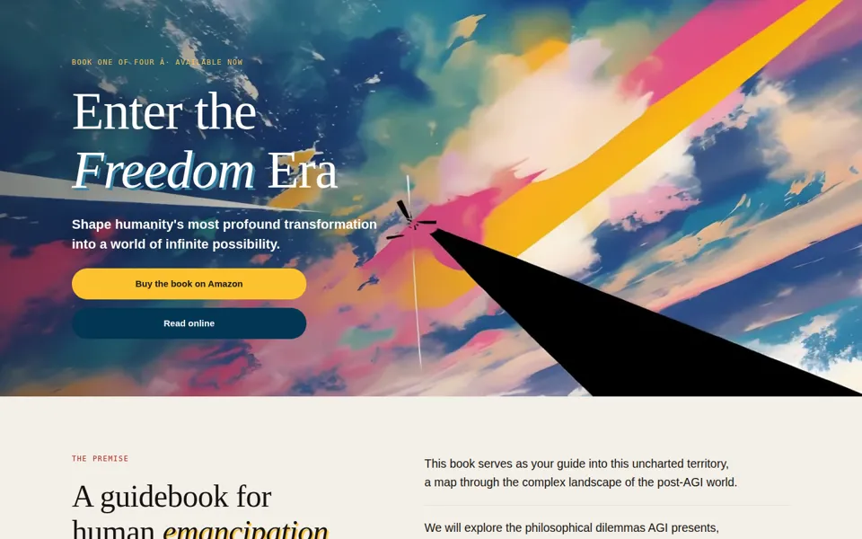
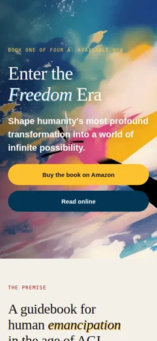
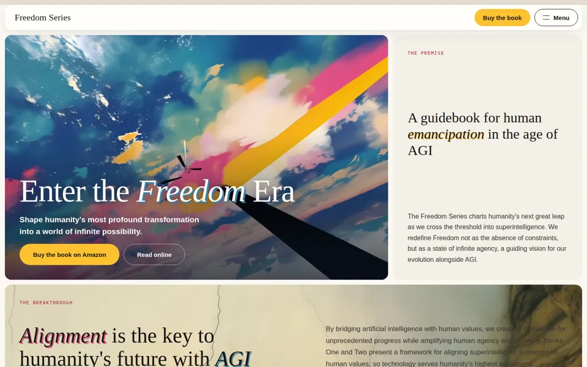
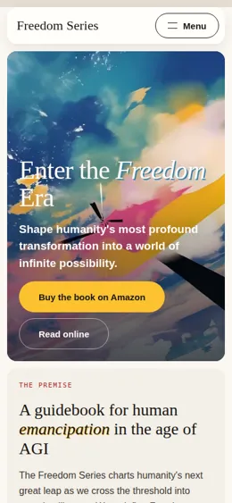
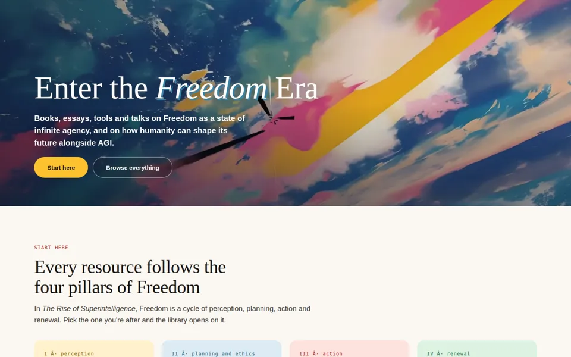
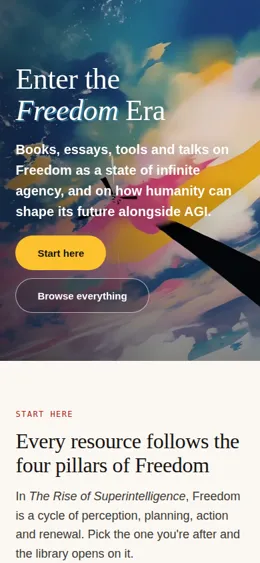

1Homepage
The current site rebuilt as one scrolling page about the book, from the premise and the reaching hands to the chapters and signup.
Open HomepageFreedom Series · site directions
All three are built on the Freedom design system with the same material. They differ in what the site is for and how people move through it. Open each one and scroll it on desktop and on your phone.


The current site rebuilt as one scrolling page about the book, from the premise and the reaching hands to the chapters and signup.
Open Homepage

The same material laid out as a board of tiles, so most of it is visible at once, with a full-screen menu.
Open Index

A home for every Freedom resource, not only the book, in a library you can filter by the four pillars of Freedom.
Open Hub